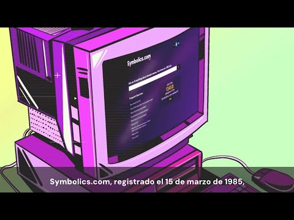
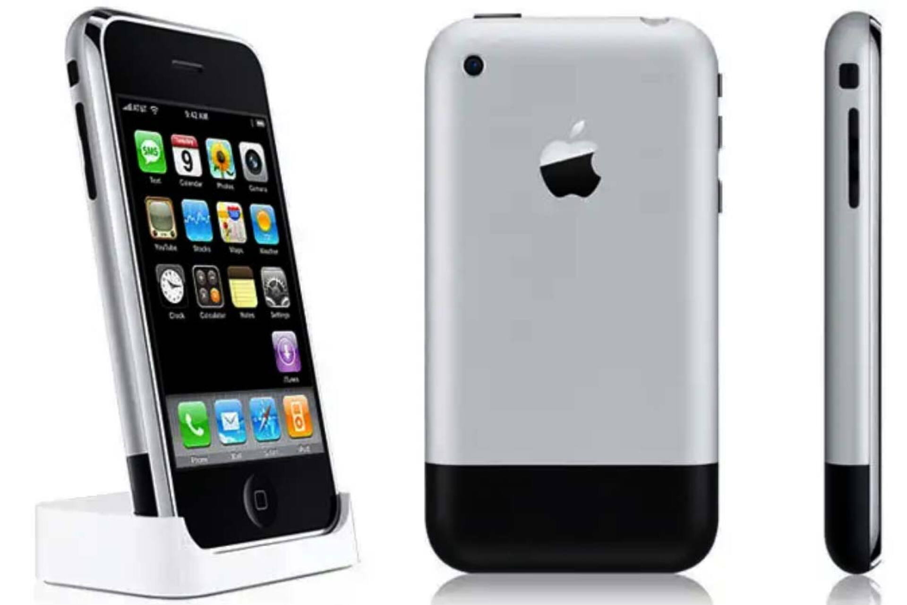
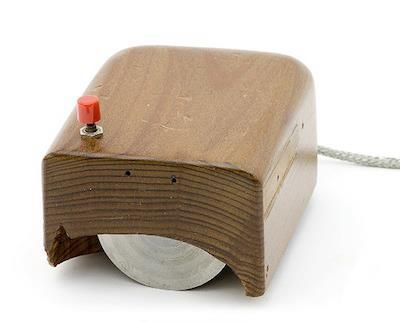
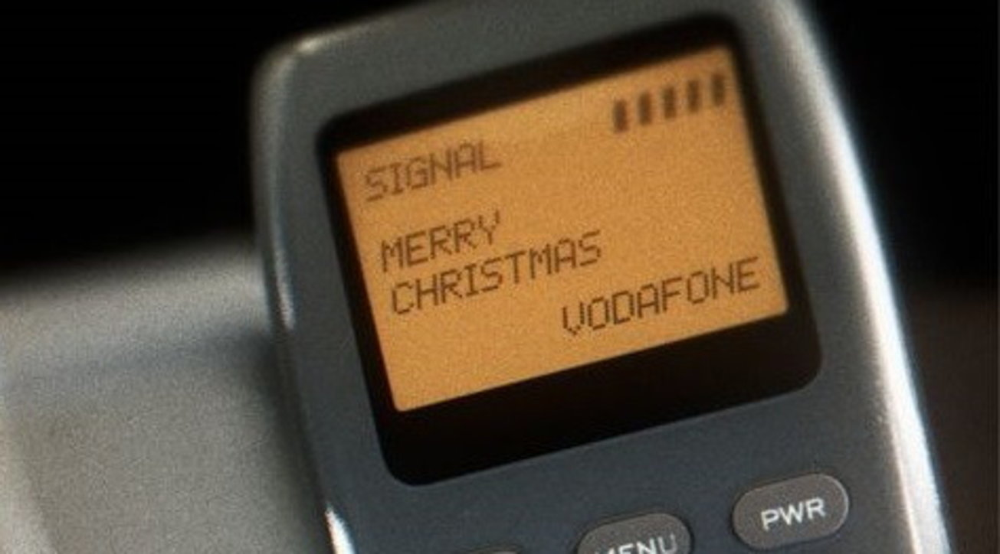

Meu primeiro post
Por: Thais Rocha Ramos
Boas-vindas ao meu novo blog! Aqui vou compartilhar dicas de progamação e curiosidades da área tecnologia.
Vou compartilhar conhecimentos sobre a tecnologia e progamação
Por: Thais Rocha Ramos
Boas-vindas ao meu novo blog! Aqui vou compartilhar dicas de progamação e curiosidades da área tecnologia.
Por: Thais Rocha Ramos
A primeira linguagem de programação da história foi criada por Ada Lovelace em 1843. Ela escreveu o primeiro algoritmo a ser processado por uma máquina, a Máquina Analítica de Charles Babbage, considerada o primeiro computador mecânico. Ada Lovelace é frequentemente citada como a primeira programadora do mundo, e sua linguagem inicial inspirou muitos dos conceitos que usamos até hoje.
Fonte: Portal iMasters

Por: Thais Rocha Ramos
O primeiro domínio da internet registrado foi symbolics.com , em 15 de março de 1985. Ele pertencia à Symbolics Inc., uma empresa de software especializada em inteligência artificial. Hoje, existem mais de 1,5 bilhão de sites ativos na web, e o número continua crescendo.
Fonte: Logo do Cursa

Por: Thais Rocha Ramos
Quando o primeiro iPhone foi lançado em 2007, ele não tinha funções básicas como copiar e colar. Esses recursos só foram adicionados dois anos depois, com o lançamento do iOS 3.0. Isso mostra como até mesmo os produtos mais inovadores podem começar com limitações.
Fonte: Logo do Cursa
Por: Thais Rocha Ramos
Muitos pensam que o Facebook ou o MySpace foram as primeiras redes sociais, mas a verdadeira pioneira foi o "Bulletin Board System" (BBS), criado em 1978. Ele permitia que usuários compartilhassem mensagens e arquivos em fóruns online.
Embora rudimentar, o BBS estabeleceu os princípios básicos das redes sociais modernas, como interação e compartilhamento de conteúdo.
Fonte: Logo do Cursa

Por: Thais Rocha Ramos
A princípio, o mouse não era uma invenção recente. Douglas Engelbart, um engajador da Stanford Research Institute, criou o primeiro modelo de mouse em 1964. O primeiro mouse era feito em madeira e tinha apenas dois botões. Engelbart imaginou a ferramenta como uma forma de facilitar a interação entre humanos e computadores.
Fonte: GeekClub – O clube que todo nerd quer entrar
.webp)
Por: Thais Rocha Ramos
O símbolo que representa a conectividade sem fio é frequentemente entendido como ondas de rádio. O que poucos sabem é que o nome “Wi-Fi” não tem um significado técnico, mas foi simplesmente escolhido para agradar e se comercializar. O termo original era “IEEE 802.11b Direct Sequence”, e agora todos reconhecem o ícone em um mundo conectado.
Fonte: GeekClub – O clube que todo nerd quer entrar

Por: Thais Rocha Ramos
O primeiro SMS foi enviado em 1992, por Neil Papworth. Ele digitou 'Feliz Natal' e enviou para um colega. Desde então, as mensagens de texto se tornaram uma parte vital na comunicação do dia a dia, transformando completamente como nos conectamos.
Fonte: GeekClub – O clube que todo nerd quer entrar